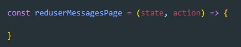
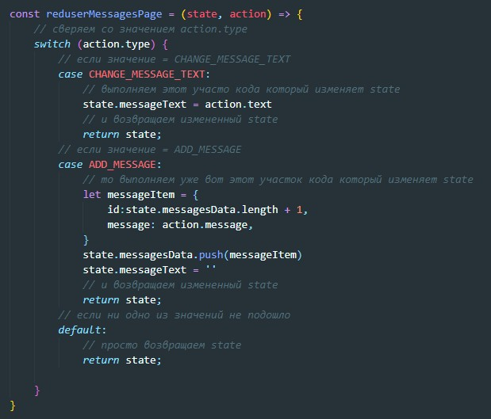
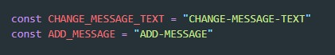
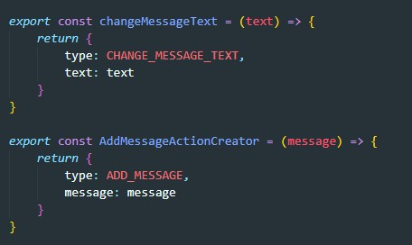
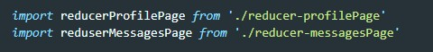

reducer - это чистая функция, которая принимает state и action, если нужно она применяет action к state и возвращает измененный(если пришлось) state. State она принимает не весь, а только тот участок (ветку) за который отвечает
Как правило один reducer находится в одном отдельном файле. т.к. reducer - это обыкновенная функция, то мы просто создаем тело обыкновенной функции, с двумя аргументами: state и action
Эта функция может обрабатывать разные action, в зависимости от значения свойства type объекта action. Поэтому здесь мы будем использовать не связку if else if, а switch
Здесь же не збываем объявить необходимые константы
Функции которые генерируют объект action так же помещаем в этот же файл:
Функции reducer не забываем импортировать в файл со state
